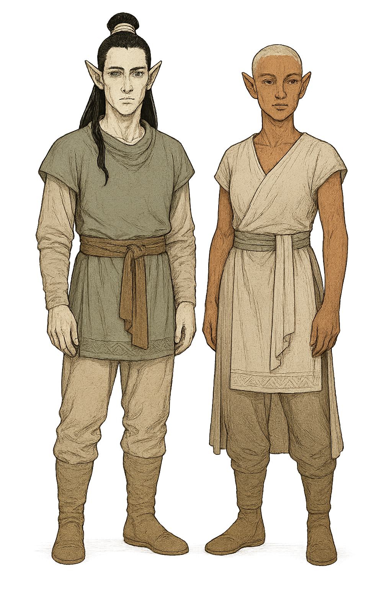

Aereni Elf
Overview
Aereni elves hail from the island nation of Aerenal, where they serve and revere their undying ancestors. They form the backbone of the Undying Court and are known for mastery of necromantic and arcane arts.
Appearance
Aereni elves are pale and elegant, with alabaster or ivory skin. Their hair ranges from silver and platinum blond to pale gold. Eyes are usually pale green, gray, or blue. Their clothing is finely made and often ceremonial.
Culture and Society
Aereni culture is steeped in history. Their every act is guided by centuries of tradition. Elders and the Undying serve as both spiritual and civic leaders. Aereni value patience, perfection, and preservation above all.
The Aereni uphold traditions that date back tens of thousands of years. Magic and necromancy are essential parts of life, and reverence for the Undying Court—elves sustained by devotion and magic—shapes society. Education, artistic mastery, and ancestor worship are prioritized. Aereni rarely leave their homeland unless on missions of scholarly or diplomatic importance.
Major Settlements
Shae Lias is a major hub of magic and scholarship. Shae Mordai is the spiritual heart of the Undying Court.
Gameplay Traits
- Ability Scores: +2 Dexterity, +1 Intelligence
- Age: Can live to over 750 years
- Size: Medium
- Speed: 30 feet
- Darkvision: 60 feet
- Keen Senses: Proficiency in Perception
- Fey Ancestry: Advantage vs being charmed; immune to magical sleep
- Trance: Meditate 4 hours instead of sleep
- Aereni Lore: Proficiency in Arcana, History, or Religion
- Languages: Common, Elvish, Aereni